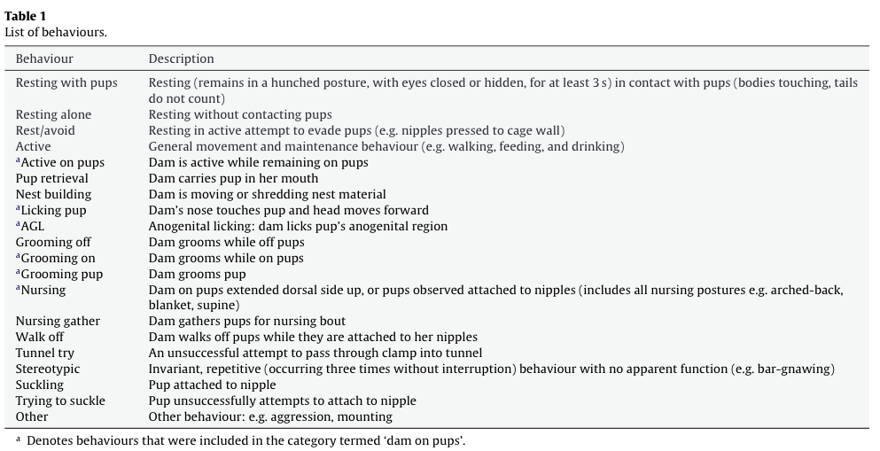
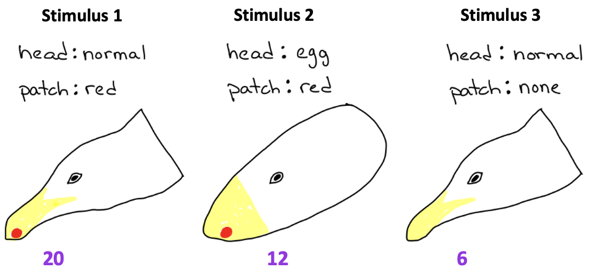

Components of Behavior, Observation, and Analysis
Contents
Components of Behavior, Observation, and Analysis¶
Deadline
Due to Gradescope by 11pm on Friday February 24.
Honor Code
This exam is open note/book/web, but must be done independently. Do not consult any other people (regardless of whether they are in or out of this course) or artificial intelligence (AI) in answering the questions. Handing in responses to assignment for grading serves as your signature of the honor code.
Answer all questions either electronically or by hand on paper. Label each of your answers with the corresponding question number. Scan or convert your document to a good quality PDF. Upload to Gradescope by the deadline – make sure to tag all appropriate page(s) in your PDF for each question.
Please don’t hesitate to ask for clarifation on the wording of questions and/or expectations. Key expectations are highlighted with font style. For any multiple choice question that asks for an explanation of your reasoning: provide a correct answer selection as well as your reasoning for selecting that answer - the reasoning should logically (and unabiguously) explain for your answer selection. Not all multiple choice questions require for reasoning.
Section 1¶
Bechard and Mason (2010) were the first to research the parental care and developmental independence of lab mice compared to wild mice. They used a novel lab housing system that allowed young, developing mice (pups) to choose between spending time in the home cage (HC) with the mother, or an identical distant cage (a ‘dispersal cage’: DC) which the mother could not access. They used live observation techniques rather than video recording (due to the ability of a live observer to move around and keep tracking animals when they go out of sight).
The experimental ethogram curated for this study is shown in Table 1 (provided for context, but not necessary for answering the questions).
{kind=link}
Q1: (2 points) The researchers knew they needed to calculate the activity budget of mouse pups, but they did not care about the action transition probabilities. Therefore, they could implement ___, which they would not have been able to do if they needed to calculate action transition probabilities.
Choose an option from below to fill in the blank.
a) continuous sampling
b) interval sampling
c) focal sampling
Q2: (4 points) Pup independence was defined as a preference for the DC over the HC. In the literature, a ‘preferred location’ is defined as a place where mice spend most of their inactive time (Blom et al., 1992). Therefore, the researchers chose to assess pup independence by calculating the pup activity budget (for active versus inactive actions) in each location. Specifically, they chose to calculate the activity budget using percentage of pups as their unit of measurement.
Which of the following data tables (1 or 2) is most likely an excerpt from the one the researchers collected?
Explain why you chose that answer and what sampling method was most likely used to construct the table.
Table 1
behavior |
location |
time |
duration |
|---|---|---|---|
active |
HC |
0:00 |
N/A |
inactive |
HC |
1:10 |
1:10 |
active |
DC |
1:30 |
0:20 |
active |
HC |
2:30 |
1:00 |
Table 2
time |
HC active |
HC inactive |
DC active |
DC inactive |
|---|---|---|---|---|
0:00 |
3 |
2 |
1 |
0 |
1:00 |
2 |
1 |
2 |
1 |
2:00 |
3 |
3 |
0 |
0 |
3:00 |
0 |
0 |
4 |
2 |
Q3: (4 points) These researchers were also interested in determining if the parental care behavior of lab dams (mouse mothers) differed from wild dams. For this research question, it was important to quantify both the activity budget as well as action sequencing (ie action transition probabilities). Therefore, they needed to implement ___ to record behavioral data for dams.
Choose an option from below to fill in the blank.
Explain why you chose that answer.
a) continuous focal sampling
b) interval focal sampling
c) interval scan sampling
The actions included in the data collection for dams were: R = resting with pups, GO = grooming on, GF = Grooming off, GP = grooming pups, N = nursing, L = licking pup, PR = pup retrieval.
The following sequence of actions (read from left to right) is an excerpt of the data observed for a single dam (refer to this excerpt for Q4-Q8)
GO, GF, GO, R, GF, GO, GP, N, GP, L, PR, N, GF, GO, R, N, GF, L, PR, L, GO, R, N, R, PR, R, PR, R, L, GO, GF
Q4: (2 points) I asked an Artificial Intelligence (chatGPT) to calculate the transition matrix from the excerpt of data shown. I could immediately tell that chatGPT had gotten it wrong (before even needing to count any action transitions or calculate any transition probabilites myself). The result from chatGPT is shown below.
What is the give-away that chatGPT was wrong?
{kind=link}
Q5: (2 points) Calculate and show the transition probability matrix based on the excerpt of data shown.
Q6: (2 points) Calculate the null hypothesis for the activity budget based on the excerpt of data shown.
Q7: (2 points) Calculate the activity budget based on the excerpt of data shown (include the appropriate units of measurement in your answer).
Q8: (2 points) List the actions that the dam did more than expected based on the null hypothesis.
Section 2¶
Herring gull chicks need help obtaining food. They have a stereotyped “begging” behavior (FAP): they peck at their parents’ beak. The pecking then causes their parents to regurgitate partially-digested food for the chicks to eat (though I guess the results are not guaranteed to please).
Tinbergen and Perdeck (1950) tested a wide variety of herring gull features to determine sign stimuli for the begging FAP1. Figure 1 shows the results of a small subset of their experiment for you to examine.
{kind=link}
Figure 1: Results from one of Tinbergen and Perdeck’s experiments on the begging FAP of herring gull chicks. Each of these three stimuli were presented to chicks 10 times. Tinbergen and Perdeck quantified the behavior by counting the number of pecks directed toward each stimulus during a 30 second period. They then calculated and reported the average peck rate (purple; pecks per minute) in response to each stimulus.
Q9: (4 points) Would you conclude that a normal head shape is a sign stimulus for pecking FAPs?
Answer YES or NO.
Then support your conclusion with the correct quantitative comparisons from the reported experimental results.
Q10: (4 points) In the context of Lorenz’s model of behavior, which stimulus would you infer causes a larger increase in the action-specific potential for begging?
Choose one answer from below. Then explain why you chose that answer.
a) stimulus 2
b) stimulus 3
Q11: (2 points) The hunger level of a chick can also effect the likelihood that it will exhibit begging behavior (ie. hunger increases the motivation to beg). In the context of Lorenz’s model of behavior, which of the following statements is correct?
Choose one answer from below.
a) A hungry chick will peck more at stimulus 3 than a satiated chick because the behavioral threshold of the hungry chick is lower.
b) A hungry chick will peck more at stimulus 3 than at stimulus 2 because its stimulus threshold is lower than a satiated chick.
c) A satiated chick will peck less at all three stimuli than a hungry chick because its stimulus threshold is higher.
d) Hunger increases the stimulus threshold for begging.
e) Hunger reduces the behavioral threshold for begging.
- 1
No need to read it to complete this exam, but here is the reference if you are interested: Tinbergen, N., & Perdeck, A. C. (1950). On the Stimulus Situation Releasing the Begging Response in the Newly Hatched Herring Gull Chick (Larus Argentatus Argentatus Pont.). Behaviour, 3(1), 1–39